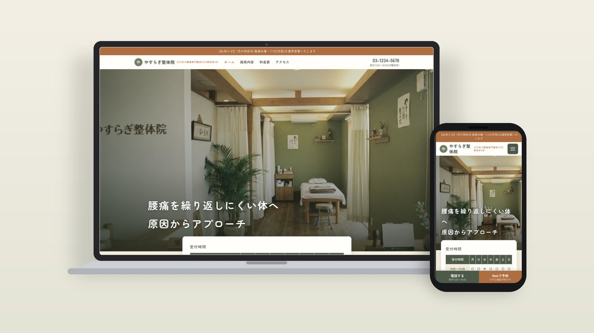
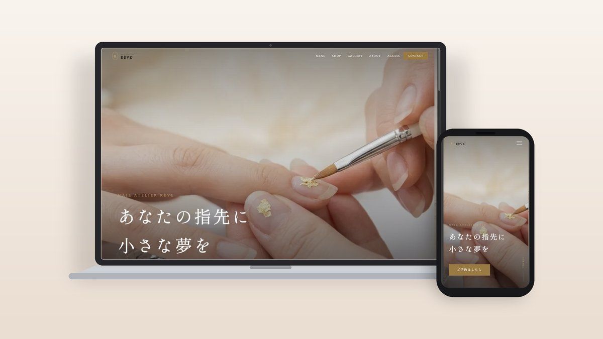
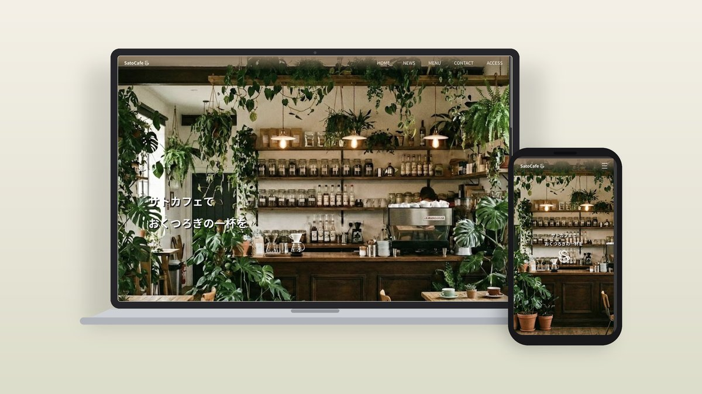
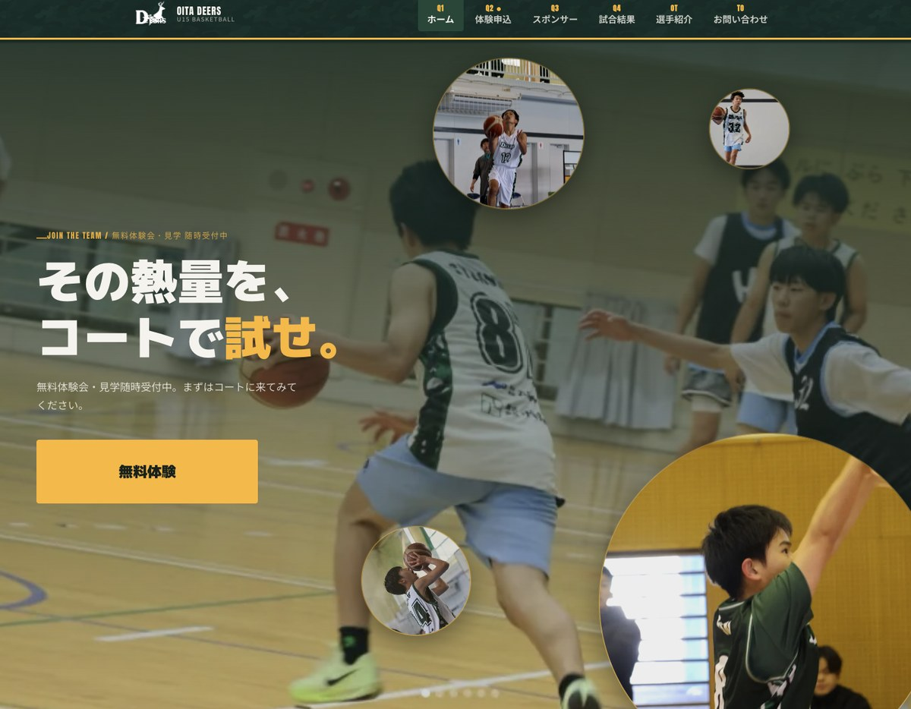

制作実績・プロダクト
プロダクト
現役看護師の視点で、現場の困りごとを解決するために自分で作ったプロダクトです。いずれも実際に触れるデモを公開しています。
制作事例
-

やすらぎ整体院
腰痛専門の整体院を想定したデモサイト。
詳しく見る
症状別の訴求と、検査・ソフト施術・セルフケア・予約優先の4つの特徴で信頼を設計。24時間WEB予約への導線（自社開発のLINE予約システム「CUE」との連携を想定）まで一貫して作りました。 -

Nail Atelier RÊVE
高単価ネイルサロンのデモサイトとして制作しました。
詳しく見る
ターゲットをトレンドに敏感な20〜30代女性に設定し、世界観の統一を最優先に設計。予約導線・ギャラリー・ショップ機能を実装し、「見るだけで来店したくなる」体験を意識しました。
カート機能はVanilla JSで実装しています。 -

SatoCafe
20〜30代の女性をターゲットに認知向上を目的とし、情報の整理と導線設計を重視した構成にしました。
詳しく見る
HTML/CSS・JavaScriptでレスポンシブ対応を実装し、WordPressテーマとして納品できる形で仕上げています。 -

OITA DEERS U15
大分市の中学生バスケットボールチームを想定したデモサイトです。
詳しく見る
部員獲得・スポンサー募集・試合結果発信を目的に、スコアボード風ナビや体験申込フォームなどを実装しています。